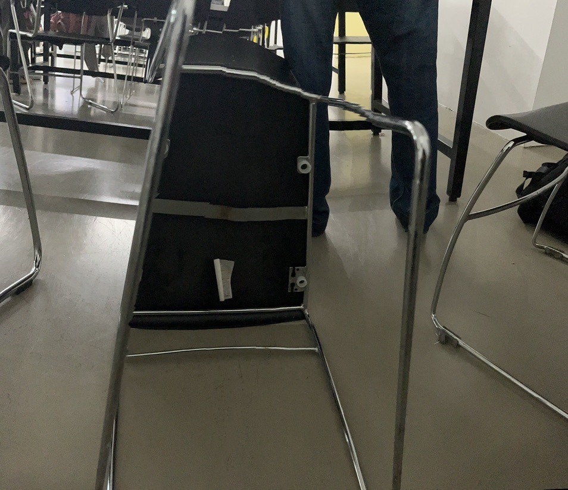

<!DOCTYPE html>
<html lang="kr">
<head>
    <meta charset="UTF-8">
    <meta http-equiv="X-UA-Compatible" content="IE=edge">
    <meta name="viewport" content="width=device-width, initial-scale=1.0">
    <link rel="stylesheet" type="text/css" href="style.css">
    <link rel="preconnect" href="https://fonts.googleapis.com">
<link rel="preconnect" href="https://fonts.gstatic.com" crossorigin>
<link href="https://fonts.googleapis.com/css2?family=Bebas+Neue&family=Noto+Sans+KR:wght@100;200;300;500;600;700;800;900&display=swap" rel="stylesheet">
    <title>밑 이미지 빼기</title>


    

</head>
<body>
    <!--<div id="container"></div>-->

    <div id="top">
        <div id="tittle"><h1>밑에서 바라보기 Looking form the bottom 밑으로 보기</h1></div>
    </div>
    <div id="middle">
        <div id="middlet">
            <div id="infobox">
            </div>
        </div>
        <div class="container">    
        <div class="middlemouse">
            <div class="moveitem" onmousemove="moveImage(event)">
                <div id="changecontainer">
                    <div id="changing-text">여기에 문장이 바뀝니다.</div>
                    <div id="changing-text2">여기에 문장이 바뀝니다.</div>
                    <div id="changing-text3">여기에 문장이 바뀝니다.</div>
                    <div id="changing-text4">여기에 문장이 바뀝니다.</div>
                </div>
                

                <div id="image-container">
                    
                </div>
                
            </div>
            <div class="item" onmousemove="moveImage(event)" >


                <ul class="column.first">
                    <li>
                        <h9> 마우스를 클릭해보세요
                            <br> 밑 이미지를 볼 수 있는 리프트가 생성됩니다. 오른쪽의 세면대 이미지도 눌러보세요
                            <br>
                            <br>
                        </h9>
                    
                    

                    

                    </li>

                        <p1>
                            다음은 밑에서 바라보기를 진행하는 방법입니다.
                            <br>
                            <br> 1. 지금 당장 당신의 주변에서 가장 가까운 물질을 고릅니다.
                             2. 한껏 고개를 젖히고 밑을 바라볼 준비를 합니다 <br>
                             3. 혹시 모를 당황스러운 상황을 대비해 쉼호흡을 해주세요
                             4. 밑바닥 또는 밑이미지를 바라봅니다
                             5. 어때요? 생각했던 그대로 인가요?
                        </p1>
                        <p>
                            밑에서 바라보는 방식에 대한 소개 <br> 다시보기
                        </p>
                        <p> 
                            주변에서 우리가 바라보는 이미지들은 대부분 본인의 움직임과 그에 따른 시선들로 구성됩니다. 바쁜 일상 속에서 눈에 띄지 않는 것들을 굳이 발굴하고자 하는 행위는 일상에 피로도를 가중할 뿐이죠. 그럼에도 불구하고 사회적인 시선(부끄러움)과 약간의 귀찮음을 이기고 밑바닥을 본다면 본인 스스로의 의지와 자신만의 테두리를 이겨냈다는 약간의 뿌듯함을 느낄 수 있습니다. 어쩌면 본인 스스로와의 싸움이 되겠네요. 그 이후부터는 중독적이게도 무엇을 보든 그것의 밑바닥의 이미지를 상상하고 추측하게 됩니다. 
                        </p>
                    
                    
                        <p>
                            평소에 본인의 높이 또는 시선에서 바라본 것들은 80%정도 본인을 위해 만들어진 것일 수 있습니다. (이 숫자는 제 개인의 주관에 따라 임의적으로 지어진 숫자일뿐 사실도 아니고 그 어떤 의미도 갖지 못합니다) 밑에서 바라보는 행위는 우리에게는 익숙하지 않은 행위지만 키가 작은(사실 이 표현도 너무나 상대적인 표현이죠, 한국인의 평균키를 말하는것. 평균값은 폭력적이어서 사용하기 싫지만.) 누군가에게는 너무나도 당연한 행위입니다.
                        </p>

                        <p>
                            예를 들어 <p1>1.개미 2.강아지 3.고양이 4.어린이 혹은 5.로봇청소기 6.자동차 등</p1>과 같은 생물과 무생물을 아우르는 것들이 있죠. 한번 이들의 시점을 상상해봅시다

                            밑모습은 # 밑에서 바라본 모습 일까요 아니면 # 전개도 속 밑부분을 말하는걸까요.
                            밑바닥과 밑이미지 밑모습, 밑이 들어가는 여러 단어들을 포용하고 있으니 이 사이트를 읽고 있는 본인이 원하는 대로 해석하면 됩니다.
                        </p>
                </li>
                <ul class="column.second"></ul>
            </div>
            <div class="item" onmousemove="moveImage(event)">

                

                <ul class="column.first">
                    <li>
                        <h9> 밑에서 바라봐야 하는 이유</h9>
                        <p class="text-indent">
                            밑에서 바라보는 방식은 <br> 우리가 더 넓은 스펙트럼으로 볼 수 있게 한다
                            밑에서 바라보는 방식은 우리가 더 넓은 스펙트럼으로 볼 수 있게 한다
                        <div id="photobox">
                            
                        </div>
                        <p2>의자를 밑에서 바라본 이미지, 파노라마로 찍어본 결과물</p2>
                        
                        <p>
                            사물 혹은 무언가의 밑바닥 이미지는 그것이 고정된 정도에 따라 다른 인상을 줍니다. 예를 들어 아무것에도 고정되지 않은 휴대폰의 경우에는 밑바닥(뒷면)을 보더라도 평소에 보던 이미지 그대로여서 아무런 감흥을 주지 못헙니다. 또 6면중 어디를 밑 바닥이라고 불러야하는지 조차 의심하게 만듭니다. 3차원 으로 이루어진 현실세계에서 고정되어 있음(어딘가에 붙어있음)은 사물을 인식하는데 특별한 감각을 느끼게 합니다. 모든것이 고정되어 있어 완전한 형태의 모습을 눈으로 볼 수 없는 사물의 경우 그것을 인식하는 우리의 태도를 바탕으 형상이 구성되게 됩니다.
                        </p>

                        <p>리스트로 정리해보자면</p>

                        <p>
                            1  1면이 고정된 경우
                            <br>2 2면이 고정된 경우 
                            <br>3 3면이 고정된 경우
                            <br>4 4면이 고정된 경우
                            <br>…. 무수히 경우    
                        </p>
                        <p>
                            고정되어 있지는 않지만 들어올리기 무거워서 밑바닥을 보기 어려운 이미지들의 경우

                            <br>혹은 정수로 표현되기보다 퍼센트로 표현되어야 할정도로 많거나 복잡한 면의 개념을 가진 사물의 경우가 존재합니다.
                        </p>

                        <p>
                            익숙하거나 친숙한 공간에 있는(가장 대표적인 예시로 ‘집’ 혹은 누군가에겐 슬프게도 ‘학교’, ‘회사’ 등등) 사물의 밑바닥을 보는 일은 뭔가 이상하고 특이한 느낌을 줍니다. 침대 밑에 들어가 숨어본 기억이 있나요? 사실 침대에 숨게되면 좁은 공간 때문에 대부분 침대 밖 광경에 집중하게 됩니다. 다만 침대 밑에 숨어서 얼굴을 돌릴 정도 공간 여유가 있는 경우 머리를 돌려서 침대 밑 이미지를 확보해봅시다. 밑모습을 바라보며 침대 위에서 자고 있을 나의 모습을 상상해봅시다. 그리고 그 밑에 깔린 또 나를 나의 모습을 그려봅니다. 내 몸은 투명하게 보이는 듯하고 잠을 자고 있는 나를 침대 밑의 지금의 내가 음침하게 쳐다보고 있습니다.
                        </p>

                        <p>
                            집이라는 개념을 꺼낸 이유는 개인적인 생각으로 밑바닥의 이미지가 언홈리(unhomly)와 관련이 있다고 생각했기 때문입니다. 너무 비약적인 감정 해석일수도 있겠으나 밑바닥의 이미지를 접했을때의 인상은 이와 같은 용어로 표현될 수 있다고 생각했어요.

                            최근에 읽은 마크피셔의 [기이한 것과 으스스한 것] (사실 전부 다 읽지 못했지만)을 읽고 
                            :: 기이한 것은 친숙 한 것을 통상 그 너머에 놓여 있는, 그리고 ‘홈리'한 것과 양립할 수 없는 무언가로(심지어 정반대의 무언가로) 이끈다. 
                            :: "기이한 것은 존재─어울리지 않는 존재─로 구성된다는 점에서 이런 생각을 떠올렸어요. 
                            실제로 본 밑모습의 이미지와 상상했던 밑모습의 이미지 둘 중에 어떤것이 더 기이한 것일까요?
                        </p>

                        <br>
                        <p>특별한 식물에 관한 짧은글, 식물에 대입하기</p>
                        <p>식물은 다양한 형태를 가지고 있다. 가벼운 식물., 하늘에 걸린 식물도 있지만. 대부분은 무거운 화분으로 인해.. 깊게 뻗은 뿌리로 인해 땅속에 박혀있다. 자연적인 물질을 밑에서 바라보자. 각각의 생명체는 서로 다른 생김새를 가지고 있기에 우리의 상상력에 의존하여 밑모습을 보여준다. 지금 집에 가거나 집가는 길에 식물에 밑바닥을 뜯어보자, 뿌리에는 흙이 묻어있을지도 혹은 특별한 액체가 묻어있을지도 모른다.</p>
                        
                    </li>
                </ul>
            </div>
            <div class="menubar">
                <div id="box1"><a href="../index.html"></a></div>
                <div id="box2"><a href="../archive/index.html"></div>
            </div>
        </div>
    </div>
    </div>
    


    <script src="script.js"></script>
</body>
</html>